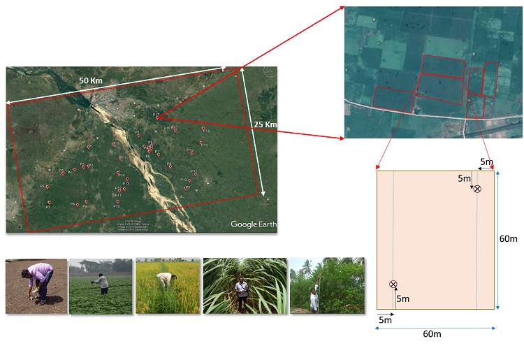
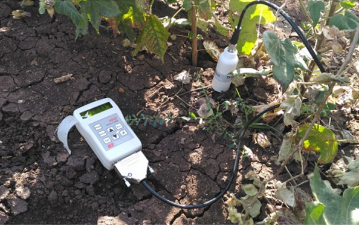

In-situ Measurement Strategy
(Standards are adopted according to the JECAM | SAR Inter-Comparison Experiment)
The field samples will be collected for ~35 field plots for Rabi season. For each plot, atleast two sampling points will be selected as following figure. At each sampling point both the vegetation and soil parameter will be collected during the campaign. Major annual crops to be targeted will include kharif rice and sugarcane.
Field sampling strategy.
I. Agronomic management practices
Date of sowing/transplantation Irrigation practice (Rainfed/partial irrigation/canal) Yield information
A. Soil Moisture
Hand-held Soil Moisture Sensor Measurements:
Surface soil moisture measurements will be acquired over selected agricultural fields coincident in time to flight overpasses. The hand held Delta Theta Probe will be used to measure soil moisture at near surface depths (5cm) at 2 locations in each field.
Soil moisture Theta Probe.
At each sample location, a total of 3 readings will be taken. Always insert the probe perpendicular to the soil surface as shown in the figure below.
Each sample location will avoid large cracks, dry clods or areas that have been heavily compacted by tractor wheels or foot traffic. Samplers must take care not to push the moisture probe in too far and cause compaction, especially if the soil is loose.
B. Vegetation Sampling
The following vegetation properties will be measured for each sampling point (2 sampling point).
- VG1: Plant Count
- VG2: Row Spacing
- VG3: Row Direction
- VG4: Plant Area Index (PAI)/LAI
- VG5: Biomass and Canopy Water Content
- VG6: Crop Height
- VG7: Phenology
- VG8: Leaf geometry (leaf inclination angle distribution, leaf geometry, leaf width, leaf thickness, leaf density, leaf layer height), stem parameters (stem geometry, stem length, stem radius, stem density, stem layer height) and ear parameters (ear/head geometry, ear length, ear radius, ear density, ear layer height). (Intensive campaigns)
VG1: Plant Count
The density of plants will be determined by counting the number of emergent plants in a row along a fixed distance of 1 meter. This will be replicated for a total of 5 counts per sampling point by moving perpendicular to the rows. Counts will be recorded on data sheets and used with row spacing to calculate plant density.
VG2: Row Spacing
Row spacing will be determined by measuring the distance between rows at each location where the plant counts are made. At each location, after the plant counts are made, the meter stick will be turned perpendicular to the row direction. At the soil level, the total distance will be measured between the centers of the two plant rows immediately adjacent on either side of the row on which the plants were counted. Row spacing will be recorded on data sheets. Plant density (PD) will be calculated as
Plant Density PD = Average number of plants in 1m/ Average row width in 1m.
VG3: Row Direction
The direction of planting will be recorded (in degrees) using a compass, and using magnetic North as a reference. Thus, you will need to line up your N direction to the magnetic needle and record the direction of the row based on that reference. Correction of these readings to true North can be done afterwards.
VG4: Plant Area Index & fCover
Plant area index (PAI) can be measured using digital hemispherical photographs. With this technique a wide-angle or fisheye lens captures all sky directions at the same time. When canopies are small, the photos are taken with the lens pointed towards the ground. For tall canopies, the camera is placed on the ground looking skyward. The fisheye photos record the geometry of the plant canopy obstructing the field of view of the soil or sky.
An advantage of this method relative to other in situ approaches (such as the LAI2000) is that the data capture is much less sensitive to sky conditions. Plant canopy analyzers such as the LAI2000 require diffuse sky conditions, restricting data capture to early morning or evening collection or collection under consistent overcast conditions. As well, high errors will occur when attempting to capture the LAI of very short vegetation (or early emerging vegetation) as the distance from the lens to the canopy is too small.
PAI will be captured using hemispherical digital photos. Five photos will be taken along two transects (10 photos in total) at each of the sampling sites. These photos will be post processed using the Caneye software to provide an estimate of PAI. In the case of row crops, photos will be taken in the middle of the crop row.
- Take the first photo at sampling location (5m-5m edge).
- Take photos 2-5 at 2 meter increments along first transect.
- Cross over to second row, and take photos 6-10 at 2 meter increments along this second transect.
- When walking back on this second transect, be sure to offset the location of photos as shown in Figure.
- When taking the photo, the operator should always face the sun.
- Record the photo numbers on the data sheet.
PAI sampling strategy.
VG5: Biomass and Canopy Water Content
Vegetation biomass will be collected via destructive sampling. Canopy water content is derived from the biomass samples. One biomass sample will be collected per measurement site.
For cereal crops and grassland, a 0.25 m x 0.25 metre square will be placed over the canopy. All above ground biomass will be collected by cutting all vegetation at the soil level. This approach is also well suited for crops which are broadcast seeded, or which have very dense planting.
For row crops (e.g. potato, corn and soybeans fields), 5 plants along two rows (10 plants in total) will be collected. Knowledge of the density of the crop will permit scaling of these measurements to a unit area (m2 ). Any weeds that are collected in the sampling plot are discarded in the field but should be noted on the data sheets if the amount is significant. Photos should also be taken for documentation purposes.
For larger biomass and wide-spaced row crops, biomass will be determined on a per plant basis and scaled to total biomass using the plant density calculations. At each sample location, 10 plants (total) will be harvested from 2 consecutive rows (5 plants x 2 rows).
- With a knife, cut the crop at the base of each plant. Do not include residue or weeds in the sample.
- Place the crop in a labeled paper biomass bag. The top of the bag can simply be rolled down. Then place the paper bag inside a plastic bag. Secure the plastic bag with a firm knot.
- The paper bag should be labeled as follows: Field # - Site # Date (Year-Month-Day)
- If the plants are large, it may be necessary to use more than one paper bag. In this case, place each paper bag inside a separate plastic bag and add the following additional label to the paper bag: Sample x of y (for example: Sample 1/3)
- If the plants are wet with dew, gently shake the vegetation prior to bagging.
- Keep the sample with paper bag in hot air oven at 70° C for 3-4days.
Plant water content (PWC) will be calculated as:
Plant Water Content (PWC) (g) = (Wet Weight (g) - Plastic Bag Weight (g)) - Dry Weight (g) For wider spaced row crops (corn, soybeans, sunflower, etc.), plant water content will be scaled to an area basis (grams of water per m2 ) according to:
[Total PWC (gm) x plant density (per m2)]/Number of plants collected
Narrow spaced low biomass crops are already collected on an area basis (0.0625 m2 ). Thus the total plant water content is easily scaled to g/m-2 by applying a factor of 16.
VG6: Crop Height
Crop height can vary significantly and increasing the number of measurements will help to improve the accuracy of the average crop height. Plants that are collected from the biomass sample are used for this measurement. In total, 10 heights will be measured, 5 in each of two rows. For narrow-row crops such as wheat, oats, and barley, the height will be measured to the top of the upper most part of the canopy, whether leaf or fruit. Leaves are to be left in their natural orientation, and not extended, for this measurement. Heights can be measured before or after biomass sampling (whatever is easiest) and recorded on data sheets.
VG7: Plant Phenology
The BBCH scale will be used for phenology determination in each sampling location.